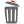
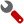

Federico Chesani, Paola Mello, Marco Montali
DEIS - University of Bologna
40136 Bologna, Italy
Contact Person: Marco Montali (marco.montali@unibo.it)
SCIFF Checker is an analysis plug-in whose purpose is to check compliance of MXML execution traces with respect to declarative business rules (called CLIMB rules). The plug-in provides an intuitive GUI to configure rules, supporting the possibility of constraining activity types, originators and execution times, and then exploits SWI-Prolog to classify the traces as compliant/non-compliant w.r.t. the customized rule. CLIMB rules are expressive reactive rules which resemble the Event-Condition-Action (ECA) ones but, since they are used for checking, they envisage expectations about executions rather than actions to be executed. Expectations represent events that should (not) happen. Therefore, CLIMB rules are used to constrain the process execution when a given situation holds. Both positive and negative constraints can be imposed on the execution, i.e., it is possible to specify what is mandatory as well as forbidden in the process.
Rules follow an IF Body having BodyConditions THEN Head structure,
where Body is a conjunction of occurred events, with zero or more associated
conditions BodyConditions, and Head is a disjunction of conjunctions of positive and negative expectations (or false). Each head element can be subject to conditions as well.
It is also possible to specify rules withouth the IF part: such rules are used to impose what the
business analyst expects (not) to find inside the process instances in any case.
The concept of event is tailored to the one of audit trail entry in the MXML meta-model, and therefore mainly characterized by
activity A is performed by OA at time TA
activity A is performed N times starting at time TstartA and ending at time
TcompletionA
is with should/should not.
The event type and the number of repeatition fields can be simply configured by changing their values. Event types range on the types envisaged in the MXML transactional model, hence it is sufficient to substitute the generic type performed with the specific one; for example,
activity A is completed by OA at time TA
focuses on the completion of activity A.
Other involved variables, i.e. activity types, originators and execution times, can instead be attached to conditions, in order to constrain them (variable conditions) or relating them to specific values (absolute conditions). The following table summarizes the currently supported conditions, where activity types an originators are treated as string variables, and execution times as time variabiles.
| Type | Condition | Description | Applies to |
|---|---|---|---|
| absolute string condition | V [equal to | different from] constant |
Variable V is equal to/different from a string constant | originator or activity type |
| relative string condition | V [equal to | different from] V2 |
Variable V is equal to/different from another variable | |
| absolute time condition | V [at | not at | after | after or at | before | before or at] datetime |
Variable V is at/not at/... a certain datetime | execution / start / completion time |
| relative time condition | V [at | not at | after | after or at | before | before or at] V2 ([+|-] displacement) |
Variable V is at/not at/... another variable (optionally) plus/minus a certain time displacement |
Rule templates are partially specified CLIMB rules which do not make use of absolute conditions; hence, they represent re-usable patterns which can be configured using the tool by adding further conditions or grounding them to a specific setting.
A basic template example is the synchronized responded existence, which state that when two activities A and B are both performed, then another activity C should be performed as well:
IF activity A is performed
and activity B is performed
THEN activity C should be performed
Templates are loaded from a XML file located at lib/plugins/SCIFFChecker/SCIFFRules.sciff and organized into a hierarchical tree. They can be modified or re-organized by simply modifying this file by hand. Currently, different templates inspired by ConDec/DecSerFlow constraints are already available.
Such templates extends the basic ones (such as the above mentioned synchronized responded existence) by mainly taking into account the temporal dimension. For example, synchronized response constrains the synchronized responded existence by imposing that activity C must be performed after both A and B.
Obviously, an organizational dimension can be also tackled by constraining involved originators.
When the user selects a template from the tree, its corresponding CLIMB representation is loaded in the center panel.
The following table shows how rules can be manipulated by the user.
| Button | Action | Description |
|---|---|---|
| save rule | Saves the currently edited rule in the User Defined Rules family. | |
|  | remove rule | Removes the currently edited rule, if it belongs to the User Defined Rules family. |
| configure rule | Makes all the variables involved in the currently edited rule to appear and become highlighted, and enables the possibility of modifying and removing conditions. New conditions can be added by clicking on a variable and configuring the corresponding pop-up window. To modify or delete an already inserted condition, the user shall simply click on the corresponding  or icon respectively. | |
| check log | Launches the compliance checking of execution traces. All absolute datetime values (both inside the rule and in the audit trail entries) are translated to the time units specified in the granularity field. |
outpatientClinicExample.mxml MXML log, is provided within the User Defined group.
The compliance checking process is concretely started by pressing on the button. The rule and each MXML execution trace are firstly pre-processed by translating datetimes and time displacements to integer values according to the choosen granularity, then mapped onto a Prolog program. SWI Prolog is then exploited to classify each execution trace as compliant or non compliant w.r.t. the given rule. The final result is provided to the user by means of a pie chart (thanks to jfreechart) showing the number of compliant/non-compliant traces, and by explicitly enumerating correct and wrong instances.
DecMiner mining plug-in.
SCIFF Checker makes use of the following libraries and systems: